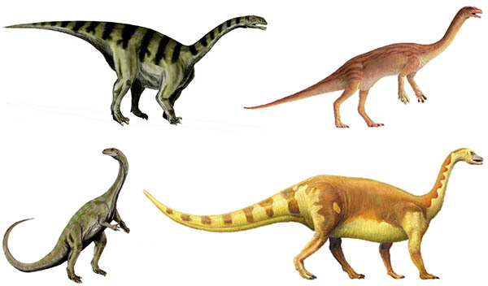

Прозауроподы
Прозавроподы, или прозауроподы (лат. Prosauropoda), — парафилетическа группа динозавров из подотряда завроподоморф (Sauropodomorpha), которой различные систематики придавали ранг от надсемейства до подотряда включительно. В настоящее время расформирована, поскольку не образует естественную эволюционную группу (кладу), а представляет собой граду, в которую включали базальных завроподоморф, но не возникших в качестве одной из их ветвей завропод.
Питались растениями и были первыми крупными динозаврами, появившимися на Земле. Жили с позднетриасовой по раннеюрскую эпоху (с карнийского века по тоарский).
Прозавроподы обитали по всей Пангее, во времена их существований представлявшей собой единый суперконтинент. Ископаемые остатки обнаружены на всех современных континентах, за исключением Австралии (откуда описан прозавропод Agrosaurus, образец которого был неверно маркирован и, вероятно, на самом деле принадлежит текодонтозавру из Англии).
Морфологическая изменчивость прозавропод была умеренная. Самые ранние формы завроподоморф, такие как Buriolestes, эораптор (Eoraptor), Pampadromaeus и Panphagia, являлись небольшими плотоядными, позже всеядными, бипедальными («двуногими») динозаврами, схожими с тероподами, с которыми они, на тот момент, только разошлись. Более продвинутые группы, в том числе произошедшие от представителей традиционных прозавропод завроподы, адаптировались к растительноядности (ранний пример — Saturnalia) и, в конечном итоге, перешли на квадропедализм («четвероногость»). Типичные растительноядные прозавроподы обладали бочкообразным туловищем с длинными хвостом и шеей. На конце шеи располагалась небольшая голова с крупными ноздрями. Зубы тупые, без зазубрин на них.
Классификация прозауроподов
- Анхизавриды
- Платеозавриды
- Меланозавриды